Peliculas relacionadas:
Dexter

Jack Ryan
Breaking Bad
Better Call Saúl
Héroes
Elenco: |
|||||
|---|---|---|---|---|---|
|
Wenthworth Miller Michael Scofield |
Dominic Purcell 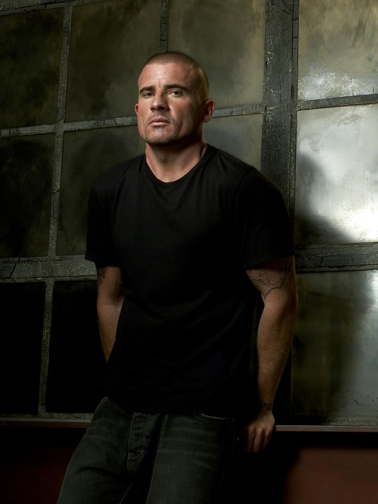Lincoln Burrows |
Sarah Wayne Callies Dr. Sara Tancredi |
Robert Knepper 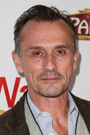T-Bag |
Amaury Nolasco Fernando Sucre |
Wade Williams 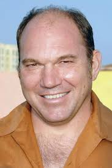Brad Bellick |
|
Paul Adelstein 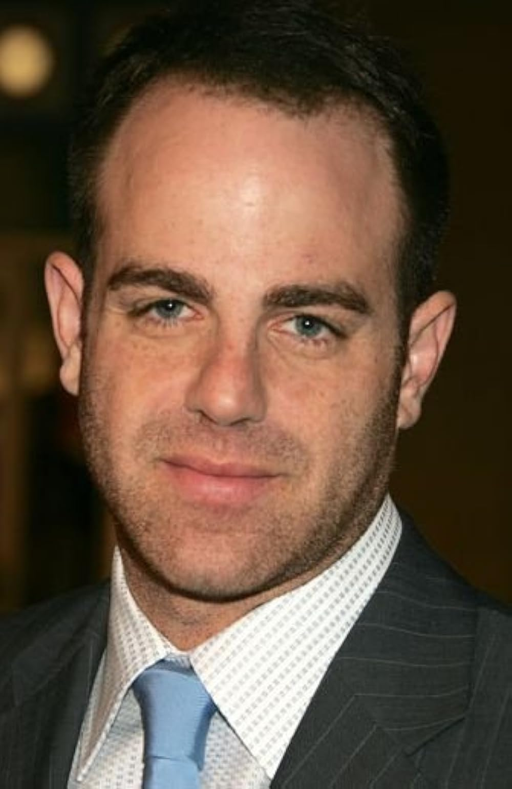Paul Kellerman |
Muse Watson 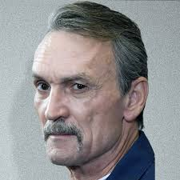Charles Westmoreland |
Peter Stormare 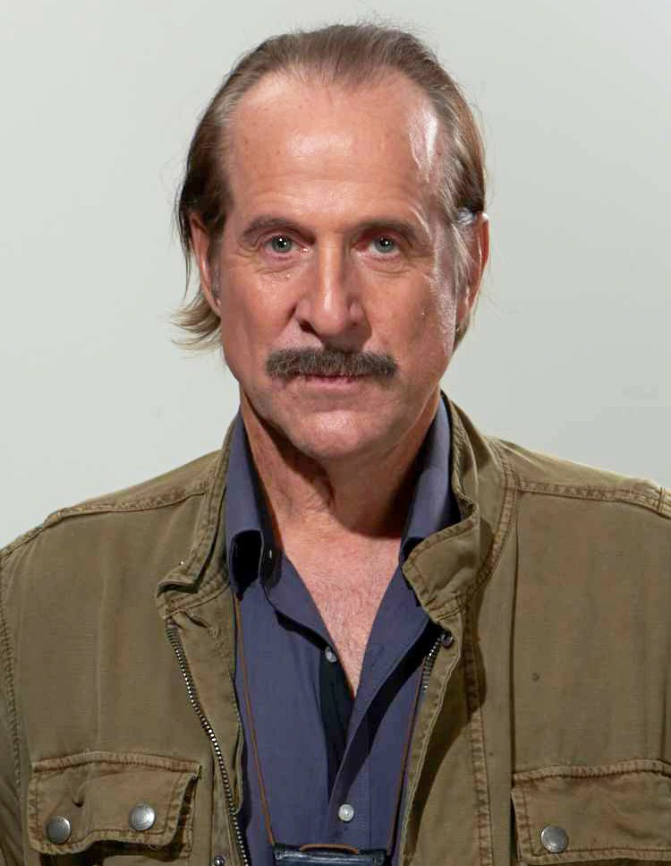John Abruzzi |
Rockmond Dunbar C-Note Franklin |
Robin Tunney 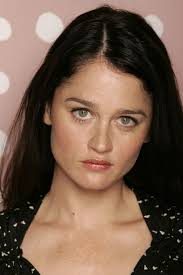Veronica Donovan |
Stacy Keach 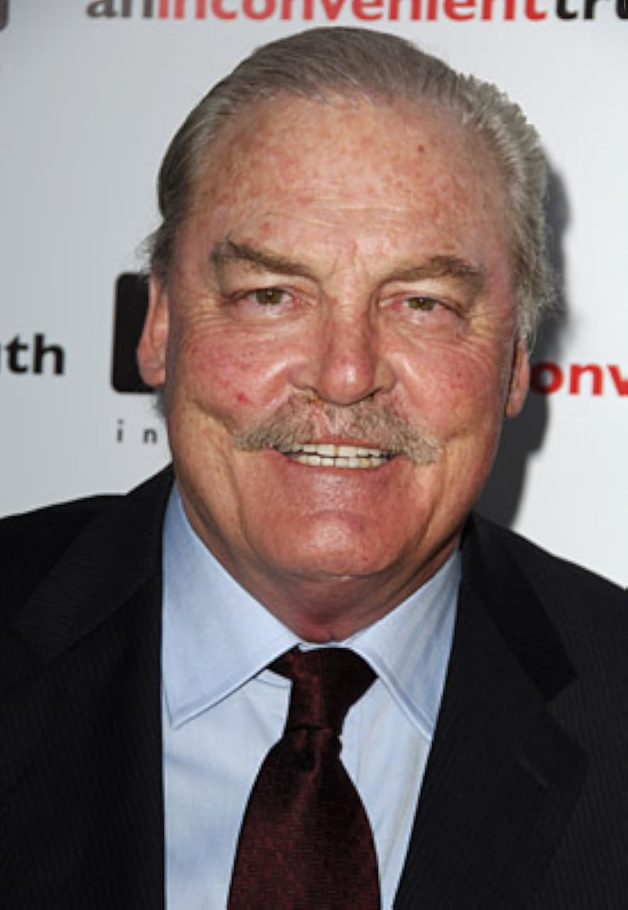Henry Pope |
Peliculas relacionadas: |
||||
|---|---|---|---|---|
|
Dexter |
Jack Ryan |
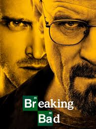
Breaking Bad |
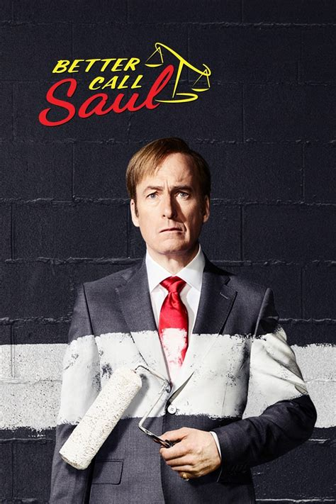
Better Call Saúl |
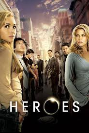
Héroes |